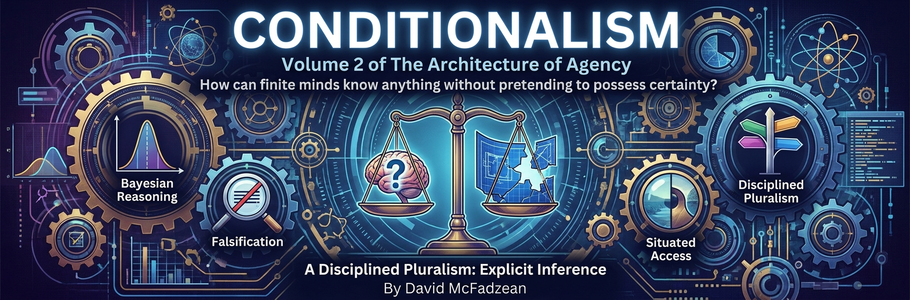

Volume 2 — Conditionalism: Truth, Bayes, and Rationality

Isaiah Berlin sorted thinkers into hedgehogs, who see everything through one big idea, and foxes, who distrust big ideas and know many small things.1 The hedgehog risks dogmatism — complexity forced into a system too neat to be true. The fox risks paralysis — nuance entertained forever, with no framework sturdy enough to act on. This volume is written in a third posture: one coherent framework, held the way a fox would hold it — conditionally, humbly, with every assumption on the table and open to attack.
The framework is Conditionalism: the thesis that a claim becomes truth-evaluable only relative to conditions that fix its interpretation and domain. This thesis applies to itself. Conditionalism is advanced within ordinary inferential, semantic, and empirical practices; it is not an unconditional pronouncement from outside every framework. Its method is to expose the conditions that materially control an evaluation, without pretending that ordinary communication must spell out an infinite background before saying anything useful.
The argument runs in six movements. Part I derives philosophy itself from the situation of any bounded agent that must act on incomplete information, and locates philosophy’s job: making pre-theoretic commitments explicit and testing them for coherence. Part II develops the theory of conditional truth — against absolutism and relativism alike — through the three levels at which truth operates, the ways statements fail to say anything at all, and twentieth-century formal results that constrain nearby claims of complete, context-free foundations without proving Conditionalism by themselves. Part III turns to representation: all empirical knowledge is model-mediated, and realism survives that fact in conditional form. Part IV rebuilds the theory of mind’s epistemic furniture — belief as a modeling construct, knowledge as reliable entropy reduction, and faith as the one epistemic structure the framework must condemn: belief with its update rule frozen shut.
Part V is a conditional technical module. Given the Quantum Branching Universe (QBU), a chosen event decomposition, and explicit self-location assumptions, it distinguishes Measure—squared-amplitude weight in the physical model—from Credence, an agent’s epistemic probability. It then tests proposed bridges between them and records what those bridges assume. Readers can reject the QBU module without rejecting Conditionalism, model-mediated realism, or Bayesian bookkeeping more generally. Part VI brings the interpretation-independent machinery back to practice: non-foundational rationality, epistemic coherence as an owned commitment, disciplined updating, persistent disagreement, a time-indexed calibration exercise, the gatekeeping role of model construction before numerical probability, policy choice under deep uncertainty, and the named synthesis the whole volume has been building toward — fallibilist Bayesianism: Bayesian about updating, pluralist about probability, critical-rationalist about knowledge. A coda gathers the method into four commitments that mark the beginning of wisdom.
The chapters are self-contained enough to read out of order — cross-links mark every load-bearing dependency — but the volume was built as one argument, and it compounds. Readers who want the physics behind the branching universe will find it in the volume on the physics of agency; readers who want the formal treatments will find the papers linked where they are used.
Part V can therefore be read as an optional extension: Chapters 1–10 establish the epistemology, Chapters 11–16 ask what follows under the book’s Everettian commitments, and Chapter 17 resumes the interpretation-independent argument.
Isaiah Berlin, The Hedgehog and the Fox, https://en.wikipedia.org/wiki/The_Hedgehog_and_the_Fox.↩︎
Chapters
Part I — The Agent's Epistemic Situation
- What Is Philosophy For? review
Philosophy is the work bounded agents do when they examine and revise the assumptions guiding reflection and choice. Science investigates the world within operational frameworks, mathematics derives consequences within formal systems, and philosophy works on the concepts, commitments, and boundaries that make those inquiries intelligible. Its products are not discoveries made from nowhere, but conceptual tools judged by coherence, explanatory reach, practical consequence, and openness to correction. Metaphysics therefore functions partly as disciplined invention: it proposes ways of organizing reality without pretending that invention makes the world obey. Because every inquiry begins from commitments that cannot all be justified at once, philosophy cannot eliminate its own starting conditions or occupy an ultimate vantage. It can instead expose those conditions, compare alternatives, and keep them answerable to constraint. Philosophy protects agency by making the rules under which thought and action proceed visible enough to criticize and revise.
Part II — Conditional Truth
- All Truth Is Conditional review
Every truth claim holds under conditions, whether those conditions are spoken, supplied by context, or buried in a framework. Water boils at 100°C only under specified physical and measurement conditions, yet the fully bound claim is objectively true rather than a matter of preference. Conditionalism rejects the false choice between absolutism, which hides its assumptions, and relativism, which mistakes dependence on conditions for dependence on opinion. A proposition is evaluated as a whole conditional: given these meanings, methods, background facts, and standards, does the claimed relation obtain? Conditions can themselves be examined, shared, revised, and tested against a mind-independent world. Conditionalism also applies to itself as a proposed framework whose usefulness and coherence depend on stated commitments rather than an unconditional proof. Making conditions explicit strengthens truth by showing exactly what would confirm, defeat, or limit a claim, while preserving the possibility of genuine disagreement about whether the conditions are met.
- The Three Levels of Truth review
Pragmatism, correspondence, and coherence answer different questions about truth rather than supplying three interchangeable verdicts. Agents care about accurate inquiry because some representations help them navigate toward their goals; this pragmatic role explains why truth matters and which distinctions are relevant to a task. Correspondence supplies the realist success condition for empirical claims: a representation succeeds when the structures it preserves match the world within its stated domain and tolerance. Coherence supplies a family of assessment methods, testing a claim against logic, evidence, other models, and the consequences that follow from accepting it. Usefulness alone cannot make a falsehood true, correspondence cannot be checked from an unmediated vantage, and internal consistency cannot rescue a fantasy disconnected from evidence. The three roles therefore form a practical division of labor rather than a theorem reducing every theory of truth to one hierarchy. Truth remains conditional throughout: purposes select the question, reality constrains the answer, and coherence helps fallible agents determine whether the constraint has been met.
- When Statements Fail review
A grammatical sentence is not automatically a truth-bearer. “It is raining” becomes evaluable when speaker, place, time, and relevant standards are fixed, whether explicitly or by a shared context; without enough binding, the sentence remains underdetermined rather than true or false. Statements can fail through unbound indexicals, missing referents, unspecified quantifier domains, hidden counterfactual antecedents, absent evaluative standards, or category violations. These failures differ, and each diagnosis identifies a different repair: supply a context, settle a semantic treatment, bind a domain, state a condition, name a standard, or clarify a figurative use. Ambiguity offers multiple possible meanings, while underdetermination provides no fixed meaning until required variables are bound. Crooked questions conceal the same problem by forcing an answer inside a malformed frame, so a straight response may need to repair the question before answering it. Condition-binding turns confident noise into claims that evidence can reach and marks the limit where no coherent completion is available.
- Truth Machines review
Formal consequence, semantic truth, proof, computation, and resource-bounded knowability are distinct achievements, and no single truth machine collapses them into one operation. Leibniz’s division between necessary truths of reason and contingent truths of fact survives only after its frameworks and interpretations are made explicit: necessity is relative to stipulated rules, while factual assessment depends on models connecting symbols to a world. Tarski clarifies how a metalanguage can state truth conditions for an object language without turning syntax into meaning by itself. Gödel establishes limits on proof within sufficiently expressive consistent formal systems, Turing establishes limits on algorithmic decision, and Chaitin connects formal derivability to information bounds. These results do not prove Conditionalism or show that every interpreter fails to understand itself; they constrain claims of complete, context-free formal foundations. Computation still requires an interpretation that assigns inputs, outputs, and significance. No ultimate formal vantage is thereby demonstrated, but any proposed vantage must declare the system, semantics, and resources under which its verdict is earned.
Part III — Models and Reality
- Maps, Models, and Understanding review
Every useful model preserves some structure and discards the rest. The London Underground map succeeds by distorting geography while retaining the relations passengers need, just as scientific models earn their keep within domains defined by scale, tolerance, and purpose. Empirical knowledge is therefore model-mediated: perception, measurement, and explanation already organize reality through representations rather than exposing an uninterpreted territory. This does not make the world a construction or reduce truth to convenience, because models encounter resistance, generate risky predictions, and can fail against structures they did not create. A model should be judged by what it preserves, where it applies, what it omits, and how robustly its results survive changes in representation. Mistaking a map for the territory produces dogmatism, while treating every map as equally arbitrary produces relativism. Better understanding comes from comparing models, testing their invariants, tracking their distortions, and remaining prepared to redraw them when reality exceeds the frame.
- Conditional Realism review
Perception may function as an adaptive interface without making the world illusory. Evolution can favor representations that support action rather than literal resemblance, yet an interface still answers to constraints that determine which actions succeed and which agents persist. Emergent objects are not unreal merely because they depend on lower-level structure; solidity, organisms, and institutions can be real at the scales where they organize prediction and consequence. Conditional realism asks what a claim requires, where it works, and what would make it fail instead of demanding an inaccessible view from nowhere. Its minimal ontology begins with constraint: something resists arbitrary interpretation, supports stable relations, and makes some models better than others. That commitment does not identify a final substrate or prove the Quantum Branching Universe, idealism, physicalism, or any other complete metaphysics. Reality needs no indubitable foundation to constrain inquiry; it is encountered through the converging success, failure, and revision of models whose conditions remain explicit.
Part IV — Belief, Knowledge, and Faith
- What Beliefs Are review
Belief is best treated as a feature of a model of an agent, including the agent’s model of itself, rather than as a discrete object stored in the mind. A threshold account captures an important special case: a proposition counts as believed when assigned enough Credence to guide prediction, decision, or action under the stakes at hand. The threshold is context-sensitive, however, and conduct can underdetermine what an agent represents because incentives, habits, conflicting goals, and performance limits intervene. Attributing belief therefore requires an interpretation stack linking observed behavior, inferred policy, modeled Credence, and the proposition as framed by an interpreter. Different adequate models may assign different beliefs without implying that every attribution is arbitrary; calibration, explanatory power, and predictive success constrain the interpretation. Certainty is neither required nor generally available. Belief talk earns its place when it compresses an agent model reliably enough to support understanding and action while remaining revisable when the model fails.
- What Knowledge Is review
Knowledge is pattern-encoded information that reliably reduces decision-relevant uncertainty within a specified domain. Reliability excludes lucky truth, as when a stopped clock happens to display the correct time, while domain and decision relevance prevent a successful representation from claiming universal authority. Patterns may be carried in minds, bodies, instruments, practices, institutions, or environments, so knowing how and knowing that need not share one format. Explanatory knowledge organizes families of observations, empirical knowledge tracks contingent conditions, formal knowledge exposes consequences within specified systems, and tacit knowledge is expressed through trained capacities that resist full articulation. None of these forms is infallible, and a representation can count as knowledge in one range while failing outside it. The account is a functional proposal rather than a stipulative solution to every Gettier case, and rival analyses of safety, sensitivity, defeat, and luck remain live. Knowledge earns the name by surviving use and correction well enough to narrow uncertainty where an agent must predict, explain, or act.
- Against Faith review
Epistemic faith is confidence protected from correction, not trust, loyalty, hope, religious practice, or every commitment called faith. A pilot’s confidence in instruments remains answerable to calibration, cross-checks, maintenance history, and observed failure; a frozen update rule instead converts counterevidence into support or declares doubt itself disqualifying. Pragmatic commitment can be rational when action must precede certainty, moral commitment can express a chosen value, and existential resolve can sustain agency without pretending to settle a factual question. Religious claims divide accordingly: practices and orientations may carry meaning, while empirical or historical claims remain accountable to evidence. Beauty can motivate inquiry and make a theory cognitively attractive, but aesthetic force is not evidence of truth without an independently warranted link. The decisive issue is structural rather than tribal: what is permitted to lower confidence? Conviction remains compatible with reason when its conditions are explicit and its update rule stays live; immunity from revision is the epistemic failure.
Part V — Conditional Module: Probability in the QBU
- Measure and Credence review
Probability can describe physical weight in a model or an agent’s graded uncertainty, and the two roles must not be conflated. Measure is the Born weight of a specified record sector in the optional Quantum Branching Universe model, relative to a state, conditioning record, and declared decomposition; it is not a count of fundamental worlds. Credence is confidence given evidence and background assumptions, whether the uncertain subject is empirical, logical, semantic, or metaphysical. A physical model can supply likelihoods for Bayesian updating, and in special cases those likelihoods may be numerically derived from ratios of Measure, but the resulting prior and posterior remain Credences. Theories themselves do not possess Measure, and assigning a theory a Credence does not make it partially true or physically chancy. Precise numbers may be unwarranted when models or likelihoods are weak, making intervals or qualitative rankings more honest. Both quantities remain conditional, while the bridge from physical weight to rational belief requires additional epistemic and decision assumptions.
- In Defense of Bayes review
Bayesianism survives its strongest critical-rationalist objections once probability in a theory is separated from Credence about a theory. Scientific theories are conjectured and criticized rather than generated by conditionalization, finite confirmation never becomes deductive proof, and no objective chance process assigns physical probability to general relativity’s truth. Agents can nevertheless be uncertain about a theory’s domain, accuracy, idealizations, and likely performance, just as they can hold graded uncertainty about an uncomputed mathematical fact. Those Credences describe the believer’s epistemic state rather than a probabilistic property of the theory. Abduction creates and compares explanations; criticism exposes failures and can enlarge or replace the model space; Bayes disciplines how confidence changes within a sufficiently stable space and evidence model. Quantification is valuable when its assumptions are earned, but sparse evidence may warrant intervals or qualitative judgment instead of false precision. Bayes is therefore an updating tool within a pluralist epistemology, not a complete account of discovery, explanation, or knowledge.
- The Varieties of Uncertainty review
Uncertainty has several forms that share probability-like discipline without sharing one underlying source. Timeline or indexical uncertainty concerns which location, identity, or record matches an observer’s evidence; within the optional QBU model, Measure can weight such alternatives. Logical uncertainty concerns consequences not yet derived by a bounded reasoner, semantic uncertainty concerns meanings or conditions not yet fixed, and metaphysical uncertainty concerns which broad framework describes reality. The fourfold map is diagnostic rather than exhaustive, and the categories can overlap. Logical Induction shows that resource-bounded agents can maintain disciplined graded beliefs about mathematical statements without positing objective chance over their truth, though its market construction is not ordinary Bayesian conditionalization unchanged. Semantic and metaphysical Credences likewise require explicit models, alternatives, and update conditions rather than invented physical frequencies. Objective Measure can constrain some Credences, but coherent uncertainty need not mirror a chance process in every domain. Good calibration begins by identifying what kind of uncertainty is present before assigning a number or choosing an update rule.
- Probability Without Collapse review
Everettian quantum mechanics retains unitary evolution and represents every nonzero measurement outcome in decoherent record sectors, leaving probability without a uniquely selected result. Measure supplies Born weight to those sectors, while Credence represents an embedded agent’s uncertainty about future observations or present self-location; naming both with probability mathematics does not identify them. A proposed regret argument connects the quantities under explicit assumptions about utilities, available bets, repeated trials, descendant evaluation, and Measure-weighted typicality. Policies whose operational Credences diverge from Measure can then be predictably outperformed across high-Measure sectors by Measure-aligned alternatives. The result motivates Born-rule behavior for agents who accept those premises, but it does not derive Credence from unitary dynamics alone. Weighting descendants by Measure may assume part of the bridge at issue, so circularity is exposed rather than declared solved. Probability without collapse remains a candidate account in which physics supplies weights, agents supply uncertainty, and additional rationality commitments connect them.
- You're Not a Random Sample review
Anthropics goes wrong when an observer is treated as a uniformly random draw from an arbitrary reference class. The Self-Sampling Assumption can make a fair coin look biased in Lazy Adam and can turn birth rank into evidence of impending doom, while the Self-Indication Assumption avoids those results by favoring populous worlds and risks the Presumptuous Philosopher. Measure-Conditioned Self-Location (MCSL) is a proposed alternative: compare how much model-specified physical weight, or Measure, supports situations matching the observer’s actual evidence. Mere phenomenal resemblance is too weak, because counterfeit memories or disconnected observer-moments can imitate an evidential state without supporting its history and inferential structure. Admissible coherent matching therefore remains the hardest unresolved condition, alongside cross-theory priors, likelihoods, and weights. The proposal returns Lazy Adam to symmetric odds and blocks generic headcount from overwhelming specific evidence, but it does not settle every Sleeping Beauty or Boltzmann-brain dispute. Self-location should begin with justified structure and evidence, not with counting heads.
- You're Not a Random Branch review
Everettian branches cannot ground probability by being counted, because they are emergent record structures whose number changes with coarse-graining. Outcome sectors can instead be weighted by total Born Measure, preserving the experimentally successful difference between a 99/1 experiment and a fifty-fifty one. A bridge from weight to Credence still requires epistemic premises: confidence should answer to evidence, equivalent internal evidence should receive equivalent treatment, and admissible refinements of a representation should not change the induced weight. Under internal-equivalence and refinement-richness assumptions, a recent preprint gives a conditional uniqueness result for refinement-stable induced weight on robust record sectors; applying it physically adds further assumptions and remains unreviewed. Quantum-controlled ancillary systems offer one QBU realization of the needed refinements without treating decompositions as literal world censuses. Low-Measure witnesses who observe maverick frequencies still exist, and the legitimacy of self-locating probability in a deterministic branching world remains open. The disciplined conclusion is to weigh specified sectors rather than count worlds, while keeping geometry, physical applicability, and the epistemic bridge distinct.
Part VI — Rational Practice
- Rationality Without Foundations review
Rationality does not require an unquestionable foundation from which every belief is justified. Pancritical rationalism replaces the demand for ultimate grounds with universal exposure to criticism: propositions, methods, standards, and the commitment to criticism itself remain open to challenge. This dissolves the justificatory regress rather than completing it, because a position can be held rationally when it survives available objections without claiming immunity from future revision. Action need not wait for certainty; agents can use the best-tested option while keeping its update rule live. An evolutionary analogy captures variation through conjecture, selection through criticism, and provisional retention, but ideas do not literally reproduce as organisms and no unbounded progress follows. Logic remains indispensable within fixed frameworks while navigation, experimentation, and adaptation matter across changing domains. Commitments are starting points offered to criticism, not foundations protected from it, so rationality is a revisable practice of movement rather than a certificate issued from an ultimate vantage.
- Sacred Coherence review
Coherence can occupy a privileged place in an agent’s hierarchy of commitments without becoming an objective command imposed on every agent. Sacred Coherence is a chosen credo: conflicts among beliefs, values, and actions should be made visible, examined, and corrected rather than hidden behind exception or improvisation. Logical consistency is necessary but insufficient, because a perfectly consistent fantasy can remain detached from evidence; explanatory integration, empirical constraint, and willingness to update also matter. Hypocrisy has unusual diagnostic reach because it tests conduct against commitments already offered as reasons, although identifying inconsistency does not by itself settle blame, sincerity, or excuse. No single scalar ranking of every value is required, but a working system needs an explicit discipline for handling collisions such as honesty against kindness or liberty against safety. Coherence serves both construction and correction by integrating commitments and exposing fractures. Calling it sacred marks a revisable personal priority, not a theorem that derives a universal moral hierarchy.
- The Discipline of Updating review
Cognition interprets before it verifies, using prior expectations to complete ambiguous input and revising only when the fit breaks. A garden-path reading makes that machinery briefly visible: a likely word appears, context contradicts it, and evidence forces the representation to change. The same process can fail at larger scales when present assumptions colonize history, desired conclusions recruit reasons after the fact, or attractive quotations survive because they sound truer than their provenance. Rationalization imitates rationality while reversing its direction, beginning with a protected conclusion and selecting support. Disciplined updating instead makes priors, evidence, alternatives, and possible defeaters explicit enough to challenge. Bayesian structure helps describe revision when the frame is adequate, but arithmetic cannot supply intellectual courage or detect every omitted possibility. Changing one’s mind is not surrender to novelty; it is the practical consequence of keeping confidence answerable to evidence. A live update rule matters more than the performance of certainty.
- Reasonable Disagreement review
Aumann’s agreement theorem is a precise result about ideal Bayesian agents with a common prior whose posteriors are common knowledge under specified information partitions. It does not show that every persistent human disagreement is irrational, nor does ordinary conversation automatically satisfy the theorem’s static assumptions. Real agents may begin with different priors, represent hypotheses differently, possess private evidence, misunderstand one another’s models, or lack common knowledge of the relevant Credences. Even complete exchange of stated reasons may leave differences in judgment about salience, reliability, and model construction that the formal setup excludes. Agreement results can still diagnose a disagreement by asking which assumption has failed and whether further disclosure should move either party. Convergence is therefore evidence of shared structure, not a universal duty to collapse every honest difference into one number. Reasonable disagreement remains possible when its sources are explicit, the participants’ update rules stay responsive, and neither treats persistence alone as proof of the other’s bad faith.
- Bayes in the Wild review
The origin of SARS-CoV-2 is a fixed but uncertain historical fact, so probabilities assigned to competing origin hypotheses are Credences rather than physical Measure. A dated Bayesian ledger can make priors, likelihood ratios, hypothesis definitions, and evidential judgments inspectable, but publication does not make subjective inputs calibrated. The preserved calculation reconstructs an earlier assessment rather than presenting a current posterior, and its binary framing must be expanded into a hypothesis tree that distinguishes natural pathways, laboratory-associated pathways, and their internal variants. Dependence among observations, selection after seeing the evidence, vague alternatives, and guessed likelihoods can multiply confidence without adding information. Reasonable analysts may therefore disagree at the level of model structure and evidential interpretation before arithmetic begins. Bayesian updating remains useful when it exposes exactly which inputs drive a conclusion and how sensitive the result is to changing them. A public ledger earns epistemic value through auditability and revision, not through the false precision of a final percentage.
- Probability After Probabilism review
Probability theory transforms numbers only after an event space, evidence model, prior, likelihoods, and interpretation have been supplied. Rain forecasts, coin weights, medical risks, and existential-risk estimates share a grammar while resting on different relations between model and world. Probabilism begins when every uncertainty is assumed to conceal one correct precise number even though the relevant possibilities or distinctions have not been earned. Events are carved by representations rather than delivered pre-labeled, so bad frames fail either by omitting live possibilities or by forcing vague phenomena into arbitrary partitions. The epistemic gate asks whether the model warrants a probability assignment; only then does the decision gate combine uncertainty with utilities, resources, and policy. Bayesian conditionalization retains full authority inside an adequate frame but cannot determine from within whether the frame excludes the truth. Better carving requires criticism, causal understanding, sensitivity analysis, and permission to use intervals, rankings, or unresolved alternatives when precision would outrun evidence.
- Deciding Under Uncertainty review
Expected utility becomes unreliable when the smallest probabilities and largest payoffs are generated by the least trustworthy parts of a model. Pascal’s Mugging exploits that weakness by pairing an unsupported story with an astronomical consequence, while the St. Petersburg game separately warns against confusing unbounded monetary expectation with utility under finite resources and feasible payoffs. A rational policy must therefore represent uncertainty about models, not merely calculate within one accepted model. Domain limits, bounded or diminishing utility, sensitivity analysis, interval estimates, and robustness across plausible specifications can prevent fragile tail assumptions from dictating action. No universal cutoff licenses ignoring low-probability harms; exclusions require reasons tied to model quality, feasibility, and decision context. The proper unit of choice is often a policy that governs repeated and information-changing situations rather than an isolated act evaluated as if future learning were irrelevant. Expected utility remains useful when conditionalized on an earned model and tested against nearby alternatives, but a nominal product cannot substitute for robustness.
- Fallibilist Bayesianism review
Bayesian conditionalization is exact within a specified hypothesis space, prior, evidence representation, and likelihood model, yet it cannot discover from inside that the true possibility was omitted. Fallibilist Bayesianism divides epistemic labor accordingly: Bayes reallocates Credence within models, while criticism creates alternatives, challenges causal structure, and replaces frames that no longer deserve confidence. Bayesian, frequentist, likelihoodist, and falsificationist practices answer different questions about belief, frequency, evidence, chance, and theory testing rather than forming one simple tribal contest. A continuing cycle moves from model construction to conditional updating, predictive testing, criticism, expansion, and renewed calibration. Structural causal models, causal-discovery methods, posterior predictive checks, counterexample searches, and adversarial hypothesis generation can formalize parts of criticism without pretending to eliminate judgment. Institutions also need incentives to reopen settled frames, because normalization and professional reward can make a false model increasingly confident. Rational inquiry combines disciplined bookkeeping with an active capacity to redraw the ledger.
Coda — The Beginning of Wisdom
- The Beginning of Wisdom review
Wisdom begins when an agent becomes answerable to constraint and explicit about frame. Constraint includes physical limits, biological tradeoffs, institutional feedback, coordination problems, epistemic boundaries, and the consequences other agents impose, without granting moral legitimacy to whatever is old or powerful. Frame honesty requires naming the concepts, conditions, scales, and interests through which a problem is represented, then checking whether a different framing changes what can responsibly be concluded. Social constructions remain contingent and revisable while producing stubbornly real incentives, dependencies, and path effects. Truth alone is insufficient when an accurate description is irrelevant to the decision, hides its normative premises, or supplies no policy for acting under uncertainty. Epistemic responsibility joins accurate representation to calibration, correction, and awareness of consequences, while later claims about agency, value, and legitimacy require additional stated commitments. Humility before reality and precision in naming converge on the same discipline: let the world resist the model, and revise the model without pretending that revision abolishes the world.